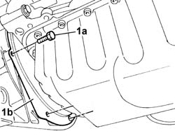

1024B54 ENGINE FLYWHEEL PROTECTION R R
- Path
- Procedures > 10 ENGINE UNIT > 1024 CRANKSHAFT AND FLYWHEEL > 1024B ENGINE FLYWHEEL > 1024B54 ENGINE FLYWHEEL PROTECTION R R
- Kind
- repair procedure (removal / refitting; the operation number is the code)
- Applies to
- engines: 2.0 16V; all production periods
- Interactive page
- https://sloeber94.github.io/elrnDB-fDct/en/#/244000680
Applies to: engines: 2.0 16V; all production periods
 Removing
Removing
 Refitting
RefittingOp. 7055B54 UNDER-ENGINE GUARD - R R
1. Undo the retaining bolts (1a) and remove the flywheel guard (1b).

Applies to: engines: 2.0 16V; all production periods
Refitting
Removing- Position the flywheel guard.
- Tighten the fixing bolts.